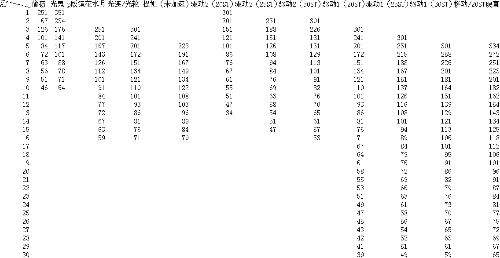
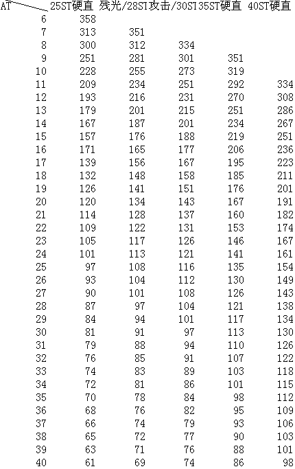

空之轨迹三部曲 行动值（AT）最终理论
作者 反转博士
AT值（Action Time）
AT值是决定角色行动顺序的变量。每个角色在开场的时候都要初始化ST值并计算AT值，当角色行动完毕之后，他的AT值就会增加，然后系统重新排列行动顺序，AT值小的排在前面，之后AT值开始流逝，当角色的AT值降为0时就轮到他行动。如此周而复始。
ST值（Skill Time）
ST值是计算AT值的因数之一，每种行动方式都被设定了固有的ST值。
SPD值
SPD值是产生AT值的因数之二。
AT值计算公式
ST/(SPD%)*(驱动系数)=AT
AT值取整数，驱动系数通常为100%，魔法蓄力的驱动系数受驱动回路的影响。
魔法的AT值
魔法的AT值分为两部分，蓄力值和冷却值，总的AT值是两者之和。
驱动回路
驱动回路只影响魔法蓄力的驱动系数，不影响魔法冷却的驱动系数。
驱动1的作用是驱动系数变为60%
驱动2的作用是驱动系数变为30%
刻耀珠的作用是驱动系数变为5%
S技的AT值
S技可以无视行动顺序使用，无视顺序使用S技后的AT值等于此技能的AT值。
天堂之吻（AT Advence）
范围内的角色AT值强制归零，相对行动顺序不变。
解除驱动
包括蓄力被中断和使用者染上负面状态两种情况，被解除的角色仍受到魔法蓄力AT值的延迟。
S-Break
包括CP值下降和使用者染上负面状态两种情况，被中断的角色仍受到S技固有的延迟。
负面状态
染上石化、冷冻、气绝、睡眠状态的角色，只会原地移动，AT值计算方法不变。
AT Delay
目标增加固定的ST值，按照目标的SPD值计算延迟的AT值。
AT值计算与能力升降的优先级
AT值计算的优先级高于能力升降、变胖、AT Advence，对自身使用加SPD值的技能，并不会减少此技能的AT值。AT Delay的优先级高于能力升降、变胖。
AT值相同的情况
如果两个角色的AT值相同，后达到此值的角色行动顺序排在前面。
状态持续时间
状态持续时间以战场上流逝的AT值来计量，每种行动方式附加的状态都被设定了固有的持续时间。
开场行动顺序
开场行动顺序与角色的SPD值、团队平均SPD值、队伍排列顺序有关，排在前面的队员先行动的可能性大。
SPD等于零的情况
当SPD等于零时，任何行动方式的AT值都等于零。
其他
复活的角色在原有AT值的基础上加20 ST的延迟。被召唤的角色在召唤者AT值的基础上加20 ST的延迟。分裂出的角色AT值与本体相同。Vanish状态不影响AT值，持续时间与AT条滚动次数有关。
基本行动方式ST值
移动———20
普通攻击—30
使用道具—20
装甲攻击—20 /水水注：装甲攻击是指3rd中的导力装甲，在SC中没有出现。
空之轨迹3rd基于AT理论的SPD计算表
作者：★神风快斗★
//水水注：请先阅读博士的AT理论，并理解空轨AT、APD的计算方式之后阅读本表，否则可能会一头雾水。//
